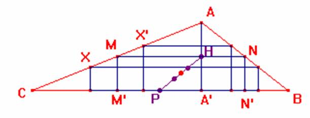

Problema 76
Hallar el lugar geométrico de los centros de los rectángulos inscritos en un triángulo de lados 7 cm, 5 cm, y 3 cm.

El L.G. requerido es el segmento HP determinado por el punto medio del segmento AA', y el punto medio del lado BC. Veamos por qué.
Consideramos en primer lugar el triángulo formado por los puntos medios de los lados AB y AC. Sea así pues el rectángulo NN'M'M que lo vamos a llamar "rectángulo medianero". Para cualquier otro rectángulo inscrito en nuestro triángulo determinamos su "simétrico" respecto de los puntos del rectángulo medianero situados en los mismos lados. Así obtenemos rectángulos de igual área. De esta manera también los puntos medios de ambos rectángulos serán simétricos respecto del punto medio del rectángulo medianero. Como los rectángulos límite de los inscritos en el triángulo son por un lado el formado por la altura AA' (base igual a 0) y, por otro, el formado por la base BC (altura igual a 0) entonces sus respectivos puntos medios H y P determinarán los extremos del segmento.
De forma inversa es cierto también que cualquier punto situado en este segmento es punto medio de un cierto rectángulo inscrito en nuestro triángulo.